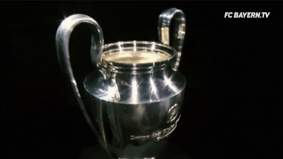

Real Madrid is known for his long history filled with many trophies, with the European cups being the most famous and dominant ones.The UEFA Champions League (abbreviated as UCL) is an annual club football competition organised by the Union of European Football Associations (UEFA) and contested by top-division European clubs, deciding the competition winners through a group and knockout format. It is one of the most prestigious football tournaments in the world and the most prestigious club competition in European football, played by the national league champions (and, for some nations, one or more runners-up) of their national associations.
| Season | Opposition | Score |
|---|---|---|
| 1955-56 | Reims | 4-3 W |
| 1956-57 | Fiorentina | 2-0 W |
| 1957-58 | Milan | 3-2 W |
| 1958-59 | Reims | 2-0 W |
| 1959-60 | Frankfurt | 7-3 W |
| 1965-66 | Partizan | 2-1 |
| 1997-98 | Juventus | 1-0 |
| 1999-2000 | Valencia | 3-0 |
| 2001-02 | Leverkusen | 2-1 |
| 2013-14 | Atletico Madrid | 4-1 |
| 2015-2016 | Atletico Madrid | 5-3(p) |
| 2016-17 | Juventus | 4-1 |
| 2017-18 | Liverpool | 3-1 |